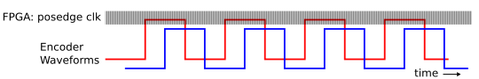

An FPGA Implementation
Intro
In this example, I've implemented a synchronous (driven by a clock) encoder decrypter on a DE0 Nano FPGA.
A note about Synchronous Design
The encoder FSM (described in the previous page) details the state logic of the flip flops. For simplicity, I chose to implement synchronous, rather than asynchronous design. Thus, the state machine evaluates the current conditions at a set clock frequency, rather than when the current conditions change. Asynchronous design, while having the advantage of being independent of a clock, is more complicated to implement on an FPGA. Unfortunatetly, if the Encoder waveform changes faster than the state machine can evaluate it, the state machine will miss counts. Howver, If the clock frequency of the FPGA is sufficiently faster than the frequency of the encoder waveform, then the FPGA will be able to keep track of the rotations of the encoder. This is more clearly detailed in the image below, where the thin pattern of vertical lines represents instances in time where the waveforms are sampled.
A question worth asking: Just how fast does the FPGA need to be to ensure that it never misses a state change? Here's a back-of-the-envelope calculation:
From the datasheet, the encoder can spin at 30,000 [RPM] maximum. The encoder in this example has a count-per-revolution (CPR) of 500, bumped up to 2000, by reading edge transitions. Thus, 30,000 [RPM] translates to 1 million edge transitions per second on the encoder output. Luckily, the clock speed of the DE0 Nano is 50 [Mhz], or 50 million evaluations of the waveform per second, a rate that's well above the max speed of the encoder.
Project Files
The full Source code can be downloaded from Github here. Enjoy!